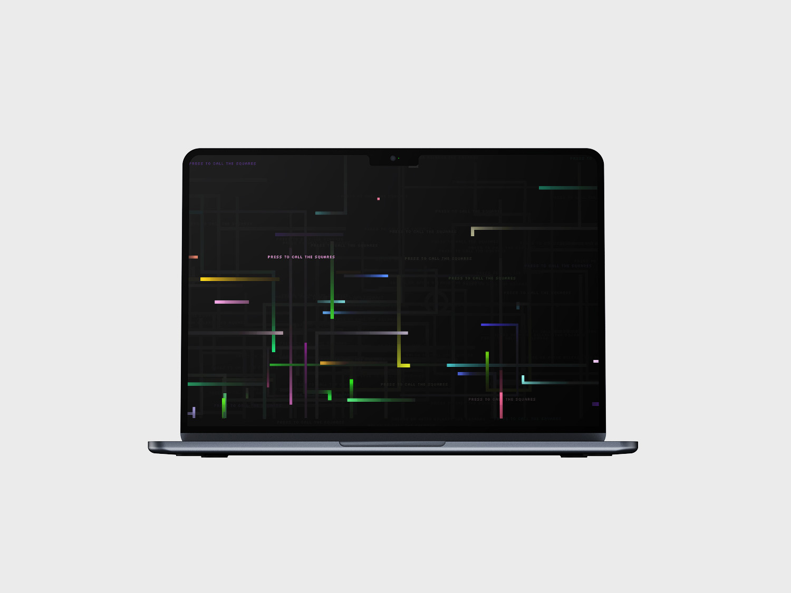

<!DOCTYPE html>
<html lang="en">

<head>
  <meta charset="utf-8" />
  <meta name="viewport" content="width=device-width, initial-scale=1.0" />

  <title>Andrea Corsini - creative coding</title>
  <link rel="icon" type="image/x-icon" href="assets/favicon.png" />

  <link rel="stylesheet" href="style2.css" />

  <script src="libraries/p5.min.js"></script>
</head>

</html>

<body>
  <!------------------------------------SCROLL------------------------------------->
  <div class="progress-container">
    <div class="progress-bar" id="myBar"></div>
  </div>

  <!------------------------------------NAVBAR------------------------------------->
  <div id="navbar">
    <a>andreacorsini.it</a>
    <a>-</a>
    <a href="" style="height: 100%;"></a>
    <a>-</a>
    <a>portfolio 2024</a>
  </div>

  <a id="works" href="index.html" style="color: white; text-decoration: none;">back</a>
  <div id="cerchiomouse1" onclick="location.href='index.html';"></div>

  <!------------------------------------HOMEPAGE------------------------------------->
  <div id="homepage">
    <a id="titoloneprj"><span
        style="position: absolute; transform: translateX(30vw); color: deeppink;">CREATIVE</span><br>
      <span
        style="font-family: Arial, Helvetica, sans-serif; font-size: 6.3vw; position: absolute; transform: translateX(44vw);">CODING
      </span></a>
  </div>


  <div id="totale">
    <div id="immagini">
      <div style="overflow: scroll">
        
        
        
        
      </div>
    </div>
    <div id="testi">
      <div id="testo">
        These are some of the project from the course “Creative Coding”, they
        are made in javascript with the p5.js library.<br />
        The first is a painting tool that emulates the dripping technique of
        Jackson Pollock, the second is an animated wallpaper inspired to the old
        windows screensavers and lastly the fourth is a drawing tool that works
        with the accelerometers of a mobile phone.<br />
        The third project is a bit different because it is a little video game
        made with clmtrackr and p5.audio, that are libraries respectively for
        face recognition and audio recognition, it is a “asteroids” like game in
        which you have to move the spaceship with your head and fire shouting
        “pem”.
        <br />
        <br />
        <a href="https://drawwithcode.github.io/2022-01-arenando-crisi/"
          style="text-decoration: underline; color: white">Here you can try the experince n°1</a>
        <br />
        <a href="https://drawwithcode.github.io/2022-02-arenando-crisi/"
          style="text-decoration: underline; color: white">Here you can try the experince n°2</a>
        <br />
        <a href="https://drawwithcode.github.io/2022-03-arenando-crisi/"
          style="text-decoration: underline; color: white">Here you can try the experince n°3</a>
        <br />
        <a href="https://drawwithcode.github.io/2022-04-arenando-crisi/"
          style="text-decoration: underline; color: white">Here you can try the experince n°4 - mobile only</a>
      </div>
    </div>
  </div>

  <script src="https://cdn.jsdelivr.net/npm/gsap@3.12.5/dist/gsap.min.js"></script>
  <script src="https://unpkg.com/split-type"></script>
  <script src="animations.js"></script>
</body>